1. Введение
Задача IMDEV-8665 (Change Request, Retail_DU): сократить время массового пересчета рыночной стоимости (MV) и средневзвешенной (WAP) для розничного ДУ. Контекст инцидента IMAPPS-36383 - срыв расчета MV при росте клиентской базы.
Цель доработки:
- Параллельное удаление и создание документов
РасчетРыночнойСтоимостииРасчетСредневзвешеннойСтоимостичерез фоновые задания БСП. - Кеширование курсов валют и валют расчета WAP в расширении
MV_WAP. - Пакетные запросы и расчет по массиву мандатов в документах MV/WAP (расширение
MV_WAP+ служебный документ в EPF). - Настраиваемое число параллельных потоков на форме обработки
внРасчетMVиWAP.
Артефакты в репозитории:
- Разработка:
bases/Wim_Mo/projects/IMDEV-8665_Retail_MV/(расширение, EPF, документация). - Тесты и регресс:
bases/Wim_Mo/projects/IMDEV-8665 Тесты/(MXL, XLS, Word).
2. Статистика финального теста (20.05.2026)
| Вариант | Интервал | Удаление старых документов | Замечания в логе | Итог |
|---|---|---|---|---|
| Оригинальная обработка | 08:07:53 - 12:04:40 | Нет (только расчет в прогоне) | Некритично: пропуск мандата «Розничное ДУ» без валюты; в логе флаг «завершена с ошибкой» — на данные не влияет | Пройден |
| Оптимизированная (5 потоков) | 14:18:17 - 14:49:55 | Да + расчет (~15 мин удаление, ~15 мин расчет) | Нет | Пройден |
| Регресс MXL (было vs стало) | После обоих прогонов, 18-19.05.2026 | МВ_Было/Стало_20052026.mxl, ВАП_Было/Стало_20052026.mxl — сравнение в 1С: файлы идентичны (рис. 7) |
Пройден | |
Детализация этапов (оптимизированный прогон)
| Этап | Начало | Конец | Длительность |
|---|---|---|---|
| MV, день 18.05.2026 | 14:18:18 | 14:26:34 | ~8 мин 16 с |
| MV, день 19.05.2026 | 14:26:34 | 14:35:15 | ~8 мин 41 с |
| WAP, день 18.05.2026 | 14:35:15 | 14:42:00 | ~6 мин 45 с |
| WAP, день 19.05.2026 | 14:42:00 | 14:49:55 | ~7 мин 55 с |
| Суммарно MV+WAP | 14:18:17 | 14:49:55 | ~31 мин 38 с |
См. таблицу замеров.
3. Технология тестирования и воспроизведения
3.1. Среда
| Параметр | Значение |
|---|---|
| Информационная база | копия Retail MO (в протоколе: AVC_REGR_CLEAN_MO, контур PROD_AVC_Retail_MO) |
| Конфигурация | Мидл-офис + расширение MV_WAP (для оптимизированного прогона) |
| Доп. обработка | внРасчетMVиWAP (БСП, публикация «Используется») |
| Команда регламента | Пересчет_MV_и_WAP_1d_Retail — «Пересчет по расписанию MV и WAP RETAIL за 1 день (фон.)» |
| Горизонт в тесте | 2 календарных дня расчета: 18.05.2026 и 19.05.2026 (по логу и письму рассылки) |
3.2. Порядок воспроизведения (как в Word-документе)
-
Прогон «было»: в справочнике доп. обработок подключить файл
внРасчетMVиWAP_Оригинал.epf, версия 2.161. - Запуск: обработка «Регламентные и фоновые задания» — выбрать задание «Дополнительная обработка: Расчет MV и WAP / … RETAIL за 1 день (фон.)» — кнопка Выполнить → В фоновом задании.
-
Контроль: журнал «Фоновые задания» (время старта/окончания, число сообщений);
письмо рассылки с темой
{OK} Аванкор МО: Пересчет по расписанию MV и WAP …. -
Сохранение «было»: выгрузка MV/WAP запросами консоли (период 18-19.05.2026) в MXL
МВ_Было_20052026.mxl,ВАП_Было_20052026.mxl(папкаРегресс/). -
Прогон «стало»: загрузить доработанную
внРасчетMVиWAP.epfверсии 2.200, в настройках обработки указать 5 параллельных потоков (создание и удаление), повторить п. 2-3. - Регресс: выгрузить «стало», сравнить MXL через «Сравнить файлы» (табличный документ) — ожидание «Файлы идентичны».
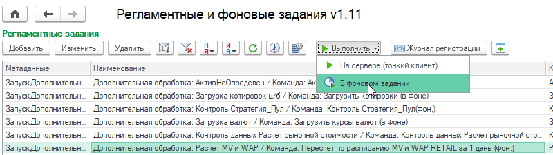
3.3. Подключение дополнительной обработки
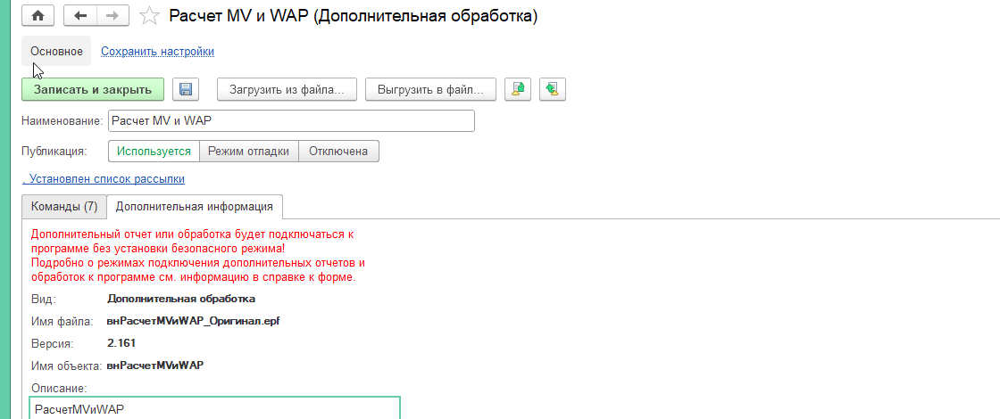
внРасчетMVиWAP_Оригинал.epf, v. 2.161.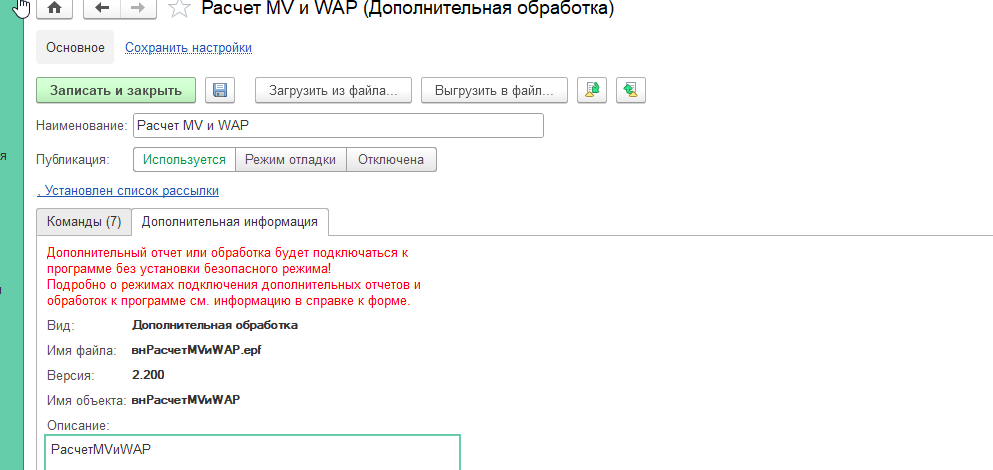
внРасчетMVиWAP.epf, v. 2.200.3.4. Настройки оптимизированного прогона
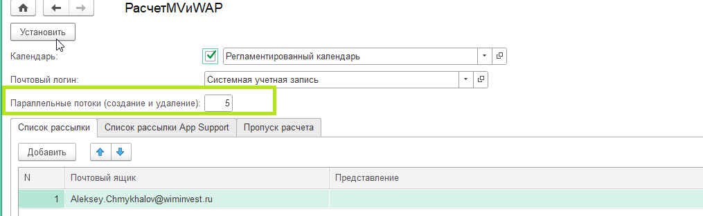
ЧислоПараллельныхФоновыхЗаданий = 5 (параллельные потоки для создания и удаления документов).3.5. Мониторинг выполнения
Внутри одного запуска «Запуск дополнительных обработок» порождаются дочерние фоновые задания на удаление и формирование пачек документов MV/WAP (по ~2 924 мандата в пачке).
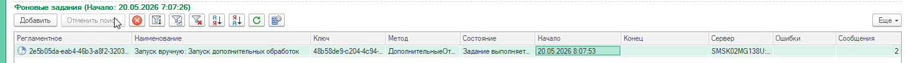
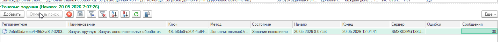
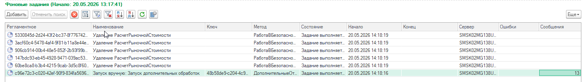
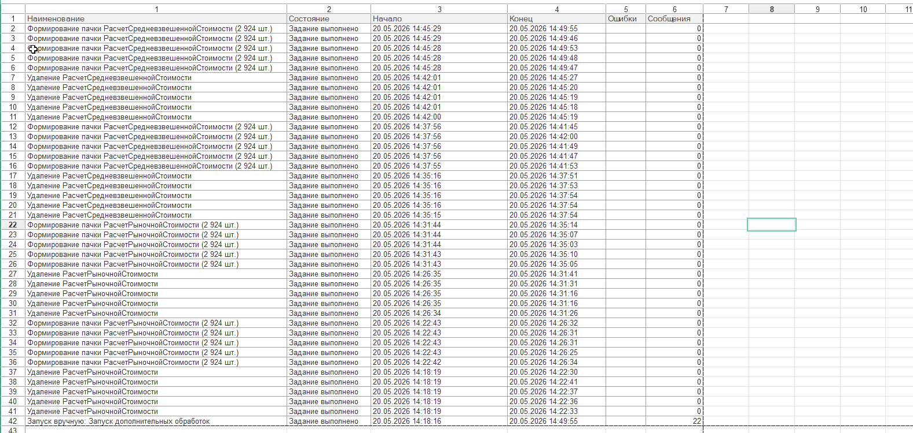
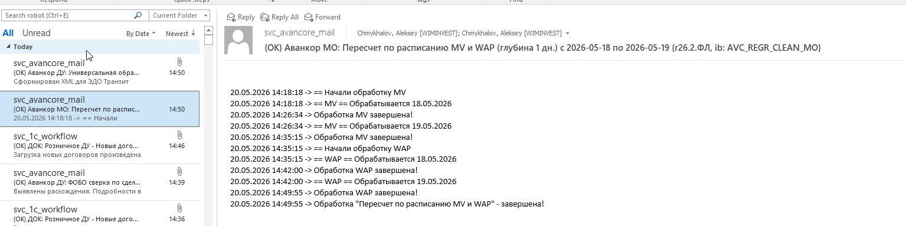
3.6. Выгрузка данных и сравнение (регресс)
Запрос выгрузки MV (консоль запросов, пакет «КонсольЗапросов_8665»):
ВЫБРАТЬ
СчетаМандата.Ссылка.Мандат КАК Мандат,
СчетаМандата.Ссылка.Валюта КАК Валюта,
СчетаМандата.Курс КАК Курс,
СчетаМандата.СчетМандата КАК СчетМандата,
СчетаМандата.РыночнаяСтоимость КАК РыночнаяСтоимость,
СчетаМандата.РыночнаяСтоимостьПлан КАК РыночнаяСтоимостьПлан
ИЗ
Документ.РасчетРыночнойСтоимости.СчетаМандата КАК СчетаМандата
ГДЕ
СчетаМандата.Ссылка.Проведен
И СчетаМандата.Ссылка.Дата МЕЖДУ &НачалоПериода И &КонецПериода
УПОРЯДОЧИТЬ ПО
Мандат
Параметры: НачалоПериода = 18.05.2026 0:00:00, КонецПериода = 19.05.2026 23:59:59 (~29 096 строк MV). Аналогично запрос ВыгрWAP для WAP.
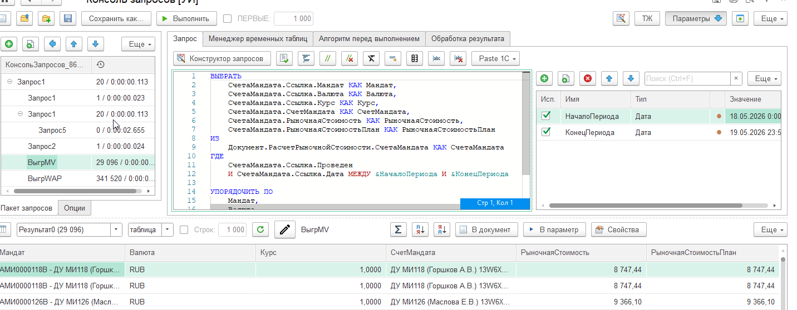
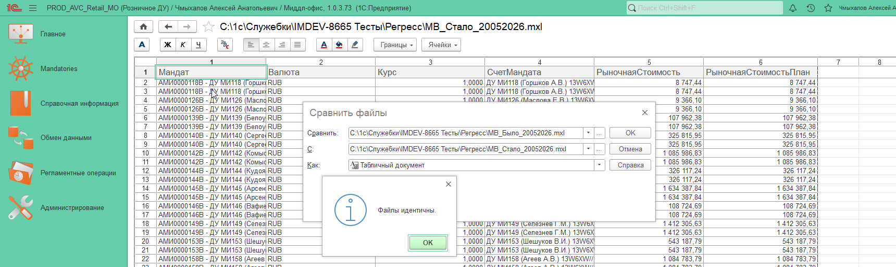
МВ_Было_20052026.mxl и МВ_Стало_20052026.mxl — «Файлы идентичны».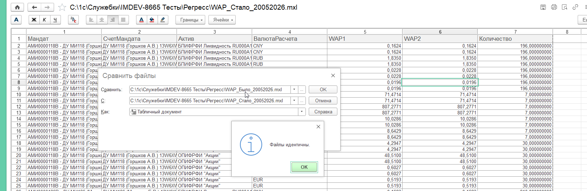
ВАП_Было_20052026.mxl и ВАП_Стало_20052026.mxl — «Файлы идентичны».ДлительныеОперации). Скриншот правок в конфигураторе — в Word (рис. по модулю WAP); исходники: проект IMDEV-8665_Retail_MV/Расширения/MV_WAP.
4. Детали тестов (логи из финального документа)
4.1. Прогон 1 - оригинальная обработка
Пройден есть некритичные записи в логе Интервал: 08:07:53 - 12:04:40 (около 4 часов).
Записи в логе (не влияют на результат теста)
Обработка помечает этапы MV/WAP как «завершена с ошибкой» из-за пропуска одного мандата без заполненной валюты. Расчет по остальным клиентам выполнен; для сравнения данных и оценки времени прогон считается успешным.
Повторяющиеся строки в логе:
Не заполнена валюта мандата! Клиент пропущен: - Розничное ДУ Обработка "Пересчет по расписанию MV и WAP" - завершена с ошибкой (MV-этап)! Были ошибки в MV-этапе Обработка "Пересчет по расписанию MV и WAP" - завершена с ошибкой (WAP-этап)! Были ошибки в WAP-этапе
Полный лог (фрагмент ключевых строк):
20.05.2026 8:07:53 -> == Начали обработку MV 20.05.2026 8:07:53 -> == MV == Обрабатывается 18.05.2026 20.05.2026 9:22:55 -> Не заполнена валюта мандата! Клиент пропущен: - Розничное ДУ 20.05.2026 9:22:55 -> Обработка MV завершена! 20.05.2026 9:22:55 -> == MV == Обрабатывается 19.05.2026 20.05.2026 10:51:37 -> Не заполнена валюта мандата! Клиент пропущен: - Розничное ДУ 20.05.2026 10:51:37 -> Обработка MV завершена! 20.05.2026 10:51:37 -> Обработка "Пересчет по расписанию MV и WAP" - завершена с ошибкой (MV-этап)! 20.05.2026 10:51:37 -> == Начали обработку WAP 20.05.2026 10:51:37 -> == WAP == Обрабатывается 18.05.2026 20.05.2026 11:27:58 -> Не заполнена валюта мандата! Клиент пропущен: - Розничное ДУ 20.05.2026 11:27:58 -> Обработка WAP завершена! 20.05.2026 11:27:58 -> == WAP == Обрабатывается 19.05.2026 20.05.2026 12:04:40 -> Не заполнена валюта мандата! Клиент пропущен: - Розничное ДУ 20.05.2026 12:04:40 -> Обработка WAP завершена! 20.05.2026 12:04:40 -> Обработка "Пересчет по расписанию MV и WAP" - завершена с ошибкой (WAP-этап)! 20.05.2026 12:04:40 -> Обработка "Пересчет по расписанию MV и WAP" - завершена!
После прогона данные выгружены в MXL (Регресс/МВ_Было_20052026.mxl, ВАП_Было_20052026.mxl).
4.2. Прогон 2 - оптимизированная версия (5 потоков)
Успешно Интервал основного расчета: 14:18:17 - 14:49:55.
20.05.2026 14:18:17 -> == Начали обработку MV 20.05.2026 14:18:17 -> == MV == Обрабатывается 18.05.2026 20.05.2026 14:18:17 -> Обработка MV завершена! 20.05.2026 14:18:17 -> == MV == Обрабатывается 19.05.2026 20.05.2026 14:18:17 -> Обработка MV завершена! 20.05.2026 14:18:17 -> == Начали обработку WAP 20.05.2026 14:18:17 -> == WAP == Обрабатывается 18.05.2026 20.05.2026 14:18:17 -> Обработка WAP завершена! 20.05.2026 14:18:17 -> == WAP == Обрабатывается 19.05.2026 20.05.2026 14:18:17 -> Обработка WAP завершена! 20.05.2026 14:18:17 -> Обработка "Пересчет по расписанию MV и WAP" - завершена! 20.05.2026 14:18:18 -> == Начали обработку MV 20.05.2026 14:18:18 -> == MV == Обрабатывается 18.05.2026 20.05.2026 14:26:34 -> Обработка MV завершена! 20.05.2026 14:26:34 -> == MV == Обрабатывается 19.05.2026 20.05.2026 14:35:15 -> Обработка MV завершена! 20.05.2026 14:35:15 -> == Начали обработку WAP 20.05.2026 14:35:15 -> == WAP == Обрабатывается 18.05.2026 20.05.2026 14:42:00 -> Обработка WAP завершена! 20.05.2026 14:42:00 -> == WAP == Обрабатывается 19.05.2026 20.05.2026 14:49:55 -> Обработка WAP завершена! 20.05.2026 14:49:55 -> Обработка "Пересчет по расписанию MV и WAP" - завершена!
4.3. Регресс данных (сравнение MXL) — пройден
| Пара сравнения | Файлы | Итог |
|---|---|---|
| MV, период 18-19.05.2026 | Регресс/МВ_Было_20052026.mxl vs МВ_Стало_20052026.mxl |
Идентичны (рис. 7а) |
| WAP, тот же период | Регресс/ВАП_Было_20052026.mxl vs ВАП_Стало_20052026.mxl |
Идентичны (рис. 7б) |
4.4. Прочие артефакты тестов
| Файл | Назначение |
|---|---|
Тесты_MV_WAP_ПаралельныйЗапуск_*.xls | Массовый прогон (~17 тыс. портфелей) |
ЗамерыОтладчика_8665.docx | Детальные замеры узких мест (до оптимизации) |
Регресс/МВ_Было_*.mxl, ВАП_Было_*.mxl (другие срезы) | Дополнительные сравнения по объему портфелей |
5. Выполненные работы по проекту (кратко)
| Направление | Реализация | Статус |
|---|---|---|
| Параллельное удаление документов | УдалитьДокументыФоновоУниверсально, пачки, УдалитьПачкуДокументовВФоне |
Сделано |
| Параллельное создание MV/WAP | СформироватьДокументыПараллельно, СоздатьИПровестиДокументВФоне |
Сделано |
| Настройка потоков | Реквизит ЧислоПараллельныхФоновыхЗаданий на форме настроек EPF |
Сделано |
| Кеш курсов и валют WAP | Расширение MV_WAP: РаботаСКурсамиВалют, ОбщегоНазначенияПовтИсп |
Сделано |
| Ускорение старта фоновых заданий | Перехват ДлительныеОперации.ЗапуститьВыполнениеВФоне |
Сделано |
| Пакетные запросы MV (массив мандатов) | Расширение MV_WAP, документ РасчетРыночнойСтоимости: &ИзменениеИКонтроль на точках замера (НКД, плановый НКД, ценные бумаги, плановые ЦБ, служебная ТЧ с ВыполнитьПакет); параметр Мандат В (&Мандат) через ОпределитьМножествоМандатов / ЗаменитьМандатНаВ |
Сделано |
| Пакетные запросы WAP (массив мандатов) | MV_WAP_ПолучитьДанныеРасчета — один ВыполнитьПакет на массив мандатов; &Вместо ЗаполнитьДокумент; ПолучитьДанныеМандата из общей структуры; запросы с Мандат В (&Мандат) |
Сделано |
| Массовый сценарий Retail (физлица) | EPF: служебный документ MV с МассивМандатов, ПерезаполнитьВсеТЧ, индекс, КопироватьПоМандату; WAP — один вызов ПолучитьДанныеРасчета на пачку (~2 924 мандата) |
Сделано |
| Оптимизация розничного мандата | &Вместо МандатРозничноеДУ в ВТБ_АлгоритмыРасчета (точка замера N=11) |
Сделано |
| Регресс данных (MXL) | Сравнение МВ_Было/Стало_20052026, ВАП_Было/Стало_20052026 — «Файлы идентичны» |
Пройден |
5.1. Расширение MV_WAP: пакетность и массив мандатов (фактическая реализация)
В отчете ранее по ошибке стоял статус «План»: по коду расширения
bases/Wim_Mo/projects/IMDEV-8665_Retail_MV/Расширения/MV_WAP
доработки документов выполнены и используются в финальном тесте.
| Объект | Механизм | Зачем |
|---|---|---|
РасчетРыночнойСтоимости |
Служебный документ на пачку: ДополнительныеСвойства.МассивМандатов, один прогон запросов, ПостроитьИндексПоМандатам, раздача в документы мандатов через КопироватьПоМандату |
Один Выполнить / ВыполнитьПакет вместо N повторов по каждому мандату (точки замера N=1, 2, 8 и др.) |
РасчетСредневзвешеннойСтоимости, менеджер |
MV_WAP_ПолучитьДанныеРасчета(Дата, МассивМандатов) — пакет запросов, результат Соответствие по мандатам и активам |
Один пакет на пачку WAP (точка замера N=3); далее ЗаполнитьДокумент(, Данные) без повторного пакета |
РасчетСредневзвешеннойСтоимости, объект |
&Вместо("ЗаполнитьДокумент") — MV_WAP_ЗаполнитьДокумент |
Поддержка переданной структуры данных с массового расчета |
ОбщегоНазначенияПовтИсп, РаботаСКурсамиВалют |
Кеш сеанса: курсы и ПолучитьВалютыРасчета |
Точки замера N=12, N=13 |
ВТБ_АлгоритмыРасчета |
MV_WAP_МандатРозничноеДУ |
Корректная котировка для розничного контура без лишних обращений (N=11) |
EPF внРасчетMVиWAP |
СформироватьПачкуДокументовВФоне создает служебный MV/WAP и вызывает API расширения |
Связка параллельных потоков EPF с пакетной логикой MV_WAP |
СформироватьПачкуДокументовВФоне:MV: один служебный
РасчетРыночнойСтоимости на ~2 924 мандата → индекс ТЧ → для каждого мандата свой документ и проведение.WAP: один вызов
ПолучитьДанныеРасчета(ТекДата, МассивМандатов) → для каждого мандата ЗаполнитьДокумент(, ПолучитьДанныеМандата(...)).
6. Возможности после внедрения
- Масштабирование нагрузки изменением
ЧислоПараллельныхФоновыхЗаданийбез правки кода (в пределах ресурсов сервера и блокировок ИБ). - Раздельный контроль времени удаления и расчета (в финальном тесте - порядка 50/50 по длительности).
- Снижение повторных обращений к
КурсыВалюти запросу валют WAP за счет кеша сеанса. - Массовый расчет по массиву мандатов: один пакет запросов WAP и один служебный прогон MV на пачку фонового задания.
- Сохранение совместимости с регламентными командами Retail (
Пересчет_MV_и_WAP_*_Retail, IMAPPS-36383). - Набор MXL/XLS для регрессии и повторяемых сравнений «было/стало».
7. Выводы
- Критерий производительности на 2 рабочих дня выполнен: 30 минут против ~4 часов на оригинале (ускорение в 8 раз), с полным циклом удаления и пересчета.
- Корректность данных: регресс закрыт — MXL «было» и «стало» по MV и WAP за 18-19.05.2026 совпадают (рис. 7); оптимизация не меняет расчетные данные. Записи в логе старой версии про «Розничное ДУ» на результат не влияют.
- Чистота лога: в оптимизированной версии те же предупреждения не воспроизводились (удобнее для мониторинга, не обязательный критерий приемки).
- Параллельность (5 потоков) подтвердила практическую применимость; дальнейшая настройка - по результатам мониторинга фоновых заданий на продуктиве.
- Регресс данных (закрыт): сравнение в 1С выполнено успешно; MV и WAP — «Файлы идентичны» (раздел 4.3, рис. 7).
- Пакетность в MV_WAP: реализована в расширении и задействована в финальном тесте (служебный MV + массовый
ПолучитьДанныеРасчетадля WAP); отдельный этап «только план» не требуется.
Регресс/ и скриншоты сравнения (рис. 7) с результатом «Файлы идентичны».